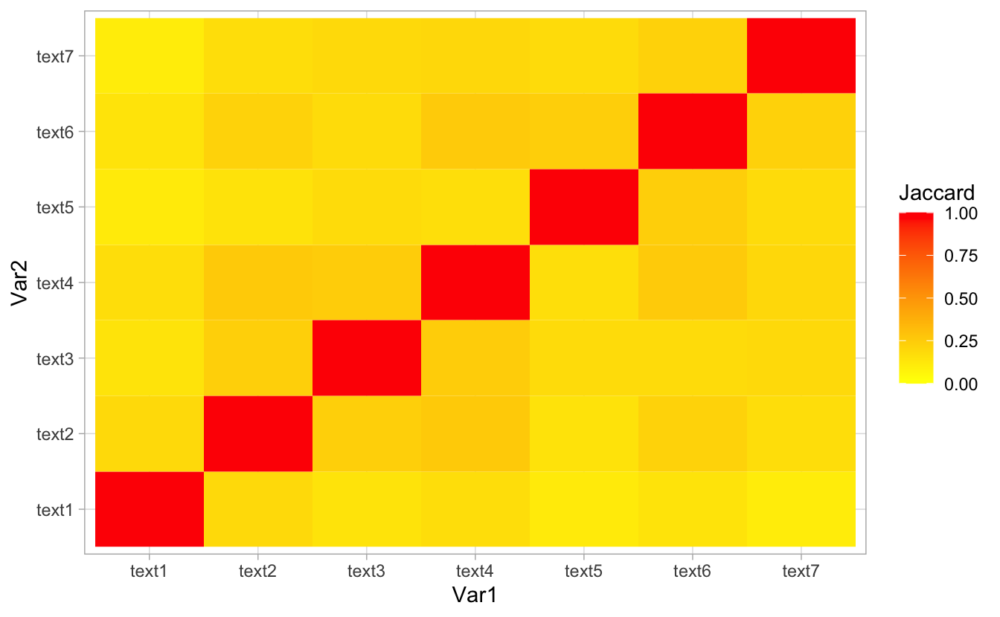
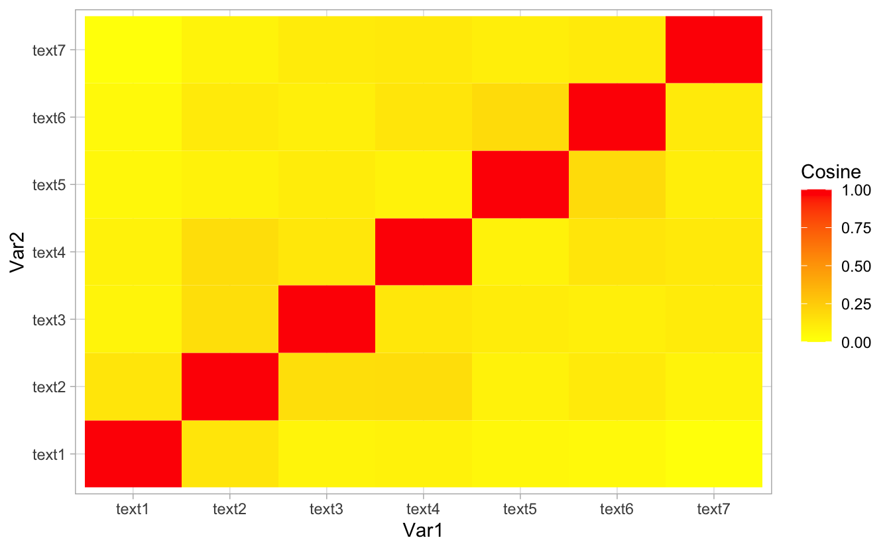
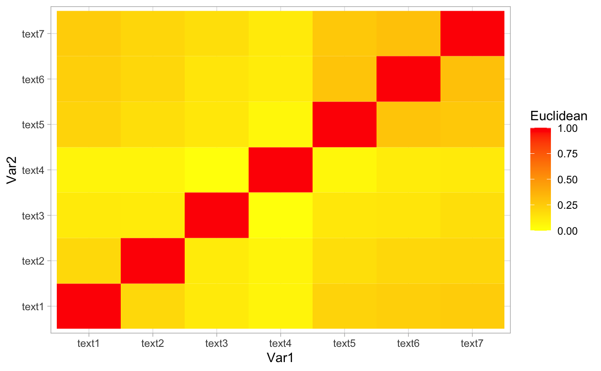
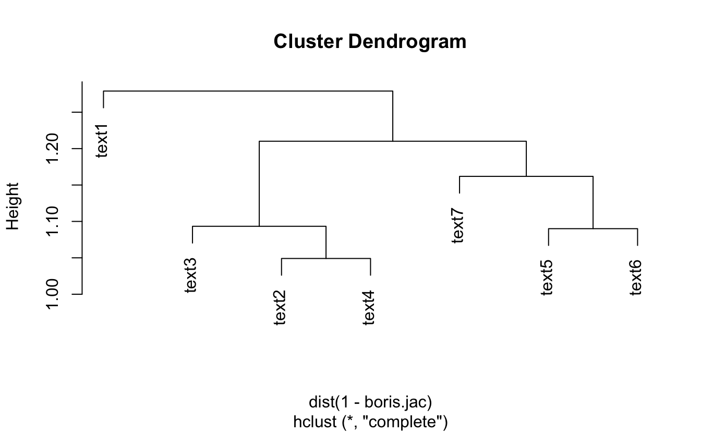
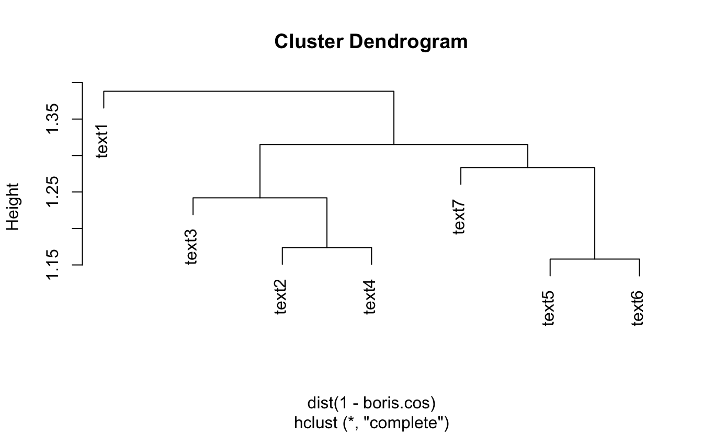
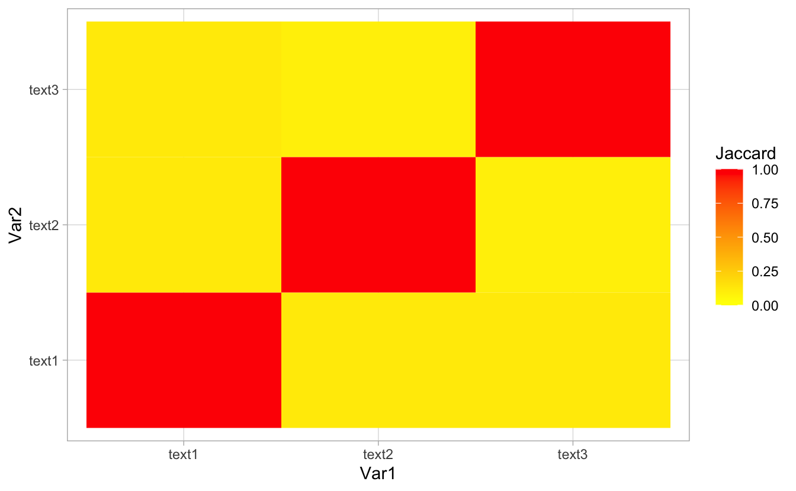
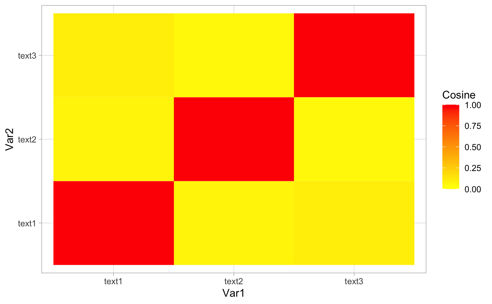
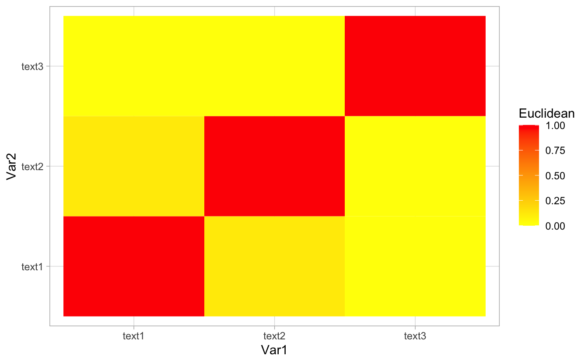

5 Similarities
library(readr)
library(quanteda)
library(knitr)
library(kableExtra)
library(reshape2)
library(ggplot2)The aim of this part of the project is to compute the similarities and dissimilarities between the different doscuments for both Johnson and Macron. We will use here the previously cleaned and tokenised corpuses and the two TF-IDF matrices computed when performing the exploratory data analysis.
The three metrics used are the following; the Jaccard Similarity (similarity measure), the Cosine Similarity (similarity measure) and the Euclidean Distance (dissimilarity measure, bounded by the largest distance that is present in the corpus, can therefore be rescaled to a similarity measure between 0 and 1, 1 being the largest distance in the corpus). In order to get a better visualisation of the three metrics, we used a heatmap representation (similarity = 0 --> yellow and similarity = 1 --> red).
Actually, when looking at the various heatmaps drawn when running the code, all those similarity measures show the same results, there is not any large similarity between the different documents for Boris Johnson. The only cases on the heatmap that are red are the ones that are on the diagonal, which corresponds to the similarity of a given document and itself, which is equal to 1.
5.1 Boris
## Jaccard Similarity
boris.jac <- textstat_simil(corpus_boris.tfidf, method = "jaccard", margin = "documents")
## Cosine Similarity
boris.cos <- textstat_simil(corpus_boris.tfidf, method = "cosine", margin = "documents")
## Euclidean Distance
boris.euc <- textstat_dist(corpus_boris.tfidf, method = "euclidean", margin = "documents")
## Jaccard Matrix
boris.jac.mat <- melt(as.matrix(boris.jac))
ggplot(data=boris.jac.mat, aes(x=Var1, y=Var2, fill=value)) + scale_fill_gradient2(low="yellow", high="red", mid="orange", midpoint =0.5, limit=c(0,1), name="Jaccard") + geom_tile()
## Cosine Matrix
boris.cos.mat <- melt(as.matrix(boris.cos))
ggplot(data=boris.cos.mat, aes(x=Var1, y=Var2, fill=value)) + scale_fill_gradient2(low="yellow", high="red", mid="orange", midpoint=0.5, limit=c(0,1), name="Cosine") + geom_tile()
## Euclidean Matrix
boris.euc.mat <- melt(as.matrix(boris.euc))
M <- max(boris.euc.mat$value)
boris.euc.mat$value.std <- (M-boris.euc.mat$value)/M
ggplot(data=boris.euc.mat, aes(x=Var1, y=Var2, fill=boris.euc.mat$value.std)) + scale_fill_gradient2(low="yellow", high="red", mid="orange", midpoint=0.5, limit=c(0,1),name ="Euclidean") + geom_tile()
We then used two different clustering methods, hierarchical clustering (dendrogram) and partitioning (K-means method). We see that the results are quite similar. When looking at the 10 most common words per cluster, there are some words that appear when using the first method and the second one.
## Clustering
## Jaccard Method
boris.hc <- hclust(dist(boris.euc))
boris.hc <- hclust(dist(1 - boris.jac))
plot(boris.hc)
## Cosine Method
boris.hc <- hclust(dist(boris.euc))
boris.hc <- hclust(dist(1 - boris.cos))
plot(boris.hc)
## Dendrogram = Hierarchical Clustering
boris.clust <- cutree(boris.hc, k=3)
boris.clust
#> text1 text2 text3 text4 text5 text6 text7
#> 1 2 2 2 3 3 3
## K-means Method = Partitionning
boris.km <- kmeans(corpus_boris.tfidf, centers=3)
boris.km$cluster
#> text1 text2 text3 text4 text5 text6 text7
#> 1 1 2 3 1 1 1
### Extracting the 10 most used words - Dendrogram
data.frame(
clust1 = names(sort(apply(corpus_boris.tfidf[boris.clust==1,],2,sum), decreasing = TRUE)[1:10]),
clust2 = names(sort(apply(corpus_boris.tfidf[boris.clust==2,],2,sum), decreasing = TRUE)[1:10]),
clust3 = names(sort(apply(corpus_boris.tfidf[boris.clust==3,],2,sum), decreasing = TRUE)[1:10])
)| clust1 | clust2 | clust3 |
|---|---|---|
| outbreak | school | already |
| chris | child | see |
| four | mass | progress |
| manage | parent | robert |
| tackle | period | jenrick |
| minister | public | behind |
| phase | ensure | thousand |
| thing | important | bite |
| patrick | dangerous | virus |
| delay | london | huge |
### Extracting the 10 most used words - K-Means
data.frame(
clust1 = names(sort(apply(corpus_boris.tfidf[boris.km$cluster==1,],2,sum), decreasing = TRUE)[1:10]),
clust2 = names(sort(apply(corpus_boris.tfidf[boris.km$cluster==2,],2,sum), decreasing = TRUE)[1:10]),
clust3 = names(sort(apply(corpus_boris.tfidf[boris.km$cluster==3,],2,sum), decreasing = TRUE)[1:10])
)| clust1 | clust2 | clust3 |
|---|---|---|
| outbreak | mass | school |
| already | london | child |
| see | contact | parent |
| chris | ensure | pupil |
| dangerous | gathering | teacher |
| progress | fight | already |
| robert | without | fightback |
| jenrick | stop | update |
| virus | non-essential | judgment |
| public | rather | downward |

When computing document similarities for Macron, we also observe that the only elements on the heatmap that are represented by the red colour are situated on the digonal. However, we can notice a slight difference here compared to Johnson. We do observe that there is a small similarity between document 1 and document 2 for Macron. This is to say that he used the same tokens both in the first and the second document.
5.2 Macron
## Jaccard Similarity
macron.jac <- textstat_simil(corpus_macron.tfidf, method = "jaccard", margin = "documents")
## Cosine Similarity
macron.cos <- textstat_simil(corpus_macron.tfidf, method = "cosine", margin = "documents")
## Euclidean Distance
macron.euc <- textstat_dist(corpus_macron.tfidf, method = "euclidean", margin = "documents")
## Jaccard Matrix
macron.jac.mat <- melt(as.matrix(macron.jac))
ggplot(data=macron.jac.mat, aes(x=Var1, y=Var2, fill=value)) + scale_fill_gradient2(low="yellow", high="red", mid="orange", midpoint =0.5, limit=c(0,1), name="Jaccard") + geom_tile()
## Cosine Matrix
macron.cos.mat <- melt(as.matrix(macron.cos))
ggplot(data=macron.cos.mat, aes(x=Var1, y=Var2, fill=value)) + scale_fill_gradient2(low="yellow", high="red", mid="orange", midpoint=0.5, limit=c(0,1), name="Cosine") + geom_tile()
## Euclidean Matrix
macron.euc.mat <- melt(as.matrix(macron.euc))
M <- max(macron.euc.mat$value)
macron.euc.mat$value.std <- (M-macron.euc.mat$value)/M
ggplot(data=macron.euc.mat, aes(x=Var1, y=Var2, fill=macron.euc.mat$value.std)) + scale_fill_gradient2(low="yellow", high="red", mid="orange", midpoint=0.5, limit=c(0,1),name ="Euclidean") + geom_tile()